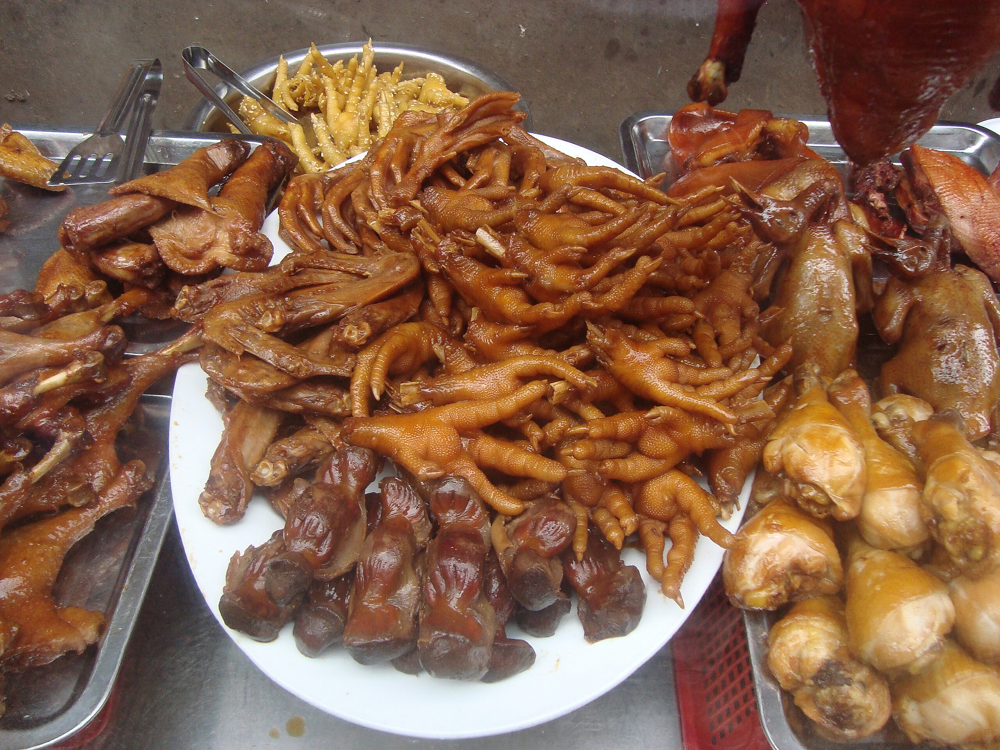

From Wikipedia, the free encyclopedia
This article is about the delicacy. For other uses, see Chicken foot (disambiguation).
Chicken feet are cooked and eaten in many countries. After an outer layer of hard skin is removed, most of the edible tissue on the feet consists of skin and tendons, with no muscle. This gives the feet a distinct gelatinous texture different from the rest of the chicken meat.
Chicken feet
Chicken feet and other chicken parts for sale on a roadside cart in Haikou, Hainan, China.
Chicken feet are used in several regional Chinese cuisines; they can be served as a beer snack, cold dish, soup or main dish. They are interchangeably called Fèng zhǎo (鳯爪, phoenix claws), Jī zhǎo (鷄爪, chicken claws), and Jī jiǎo (雞脚, chicken feet).
In Guangdong and Hong Kong,[1] they are typically deep fried and steamed first to make them puffy before being stewed and simmered in a sauce flavoured with black fermented beans, bean paste, and sugar;[2] or in abalone sauce.
In mainland China, popular snack bars specializing in marinated food such as yabozi (duck's necks) also sell lu ji zhua (鹵雞爪, marinated chicken feet), which are simmered with soy sauce, Sichuanese peppercorn, clove, garlic, star anise, cinnamon, and chili flakes. Today, packaged chicken feet are sold in most grocery stores and supermarkets in China as a snack, often seasoned with rice vinegar and chili. Another popular recipe is bai yun feng zhao (白雲鳯爪), which is marinated in a sauce of rice vinegar, rice wine flavored with sugar, salt, and minced ginger for an extended period and served as a cold dish. In southern China, they also cook chicken feet with raw peanuts to make a thin soup.
The huge demand in China raises the price of chicken feet, which are often used as fodder in other countries. As of June 2011, 1 kg of raw chicken feet costs around 12 to 16 yuan in China, compared to 11–12 yuan for 1 kg of frozen chicken breast. In 2000, Hong Kong, once the largest entrepôt for shipping chicken feet from over 30 countries, traded a total of 420,000 tons of chicken feet at the value of US$230 million.[3] Two years after joining the WTO in 2001, China approved the direct import of American chicken feet, and since then China has been the major destination of chicken feet from around the globe.[3]
Chicken feet from a dim sum restaurant in the Netherlands
In Russia, Ukraine,[citation needed] Romania,[citation needed] and Moldova,[citation needed] chicken feet are cleaned, seasoned, and boiled, often with vegetables, and then cooled, to make an aspic called kholodets in Russian and Ukrainian, and piftie or răcitură in Romanian. The legs are not always eaten, however, the chicken is cooked with its legs, as they contain a high amount of gelatin.
Moldovan chicken racitura. In this serving, chicken legs were removed after boiling.